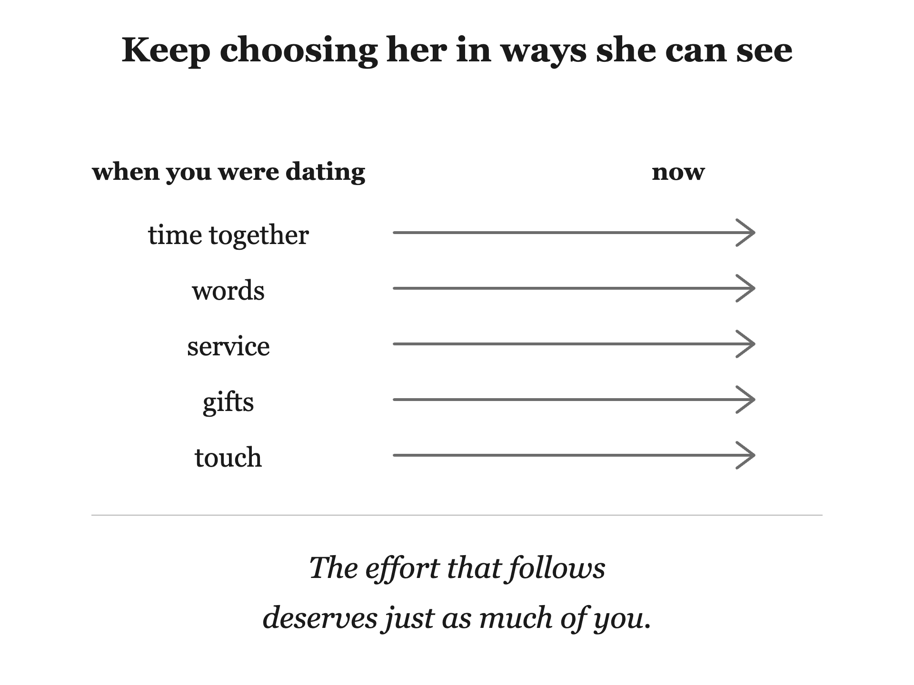

She asks if you want to watch a show together. You sit down beside her, but your phone stays in your hand. Halfway through, she laughs at something and looks over. You missed it.
Another night, you take her to dinner. You chose the place and made the reservation. Then you spend most of the meal thinking about a problem at work. You answer her, but you aren’t quite there.
You made time for her both nights. That counts for something. She wanted the part of you that came with it.
Think about how you acted when you hoped she’d say yes to another date. You paid attention to what she enjoyed. You remembered the story about her friend, brought her something she mentioned liking, and found a place you thought she’d want to go. You did those things because you were interested in her, and because her happiness mattered to you.
Marriage lets you relax together. You can sit quietly without wondering whether she’s lost interest. You know you’ll see her tomorrow. That security is a good part of the life you built. It can also make effort feel less urgent, until you find yourself giving her less of it than you did when you weren’t sure she’d stay.
That’s the mistake: you worked to win her, then treated being married as proof that the work was done. You haven’t stopped loving her. You may have stopped showing her how much thought you’re willing to give her.
The effort that follows deserves just as much of you.
Imagine asking your wife out after twelve years of marriage. You want to plan the afternoon, and the first place that comes to mind is somewhere she loved when you were dating. Would she choose it now? You remember what she liked then. You can’t quite name what she’d be excited to do this Saturday.
She’s had twelve years you didn’t live inside, even though you were there for much of them. You’ve changed too. The easy way to find out what she’d enjoy is to keep noticing her. Ask sometimes, of course. Then remember her answer, and do something with it.
If she wants to watch a show with you, put your phone down. You don’t have to love the show. You can enjoy sitting beside her, seeing what makes her laugh, and letting an hour belong to the two of you. If you asked her to dinner, listen to what she’s saying across the table. Work can wait until the drive home.
Presence is more than a good conversation. Sometimes she wants to talk about her day. Sometimes she wants your company while neither of you says much. You can tell the difference if you’re paying attention. If your mind wanders, come back. You won’t give her every minute perfectly, but you can give her the evening you offered.
Words matter too. Tell her when you admire the way she handled something. Thank her for what she did today, especially the thing nobody else saw. Say she’s beautiful when you think it. Familiar affection doesn’t become less true because you’ve said it before.
Touch can say something too, when she wants it. Reach for her hand on a walk. Sit close enough on the couch to feel that you’re together. Learn whether a hug helps her feel loved at the end of a hard day, rather than assuming it does.
The five love languages are a popular way to remember that care has more than one form: time together, words, service, gifts, and touch. They aren’t a scientific rule that every person has one fixed language. They’re useful here because they can show you what you’ve let fall away. If you mostly talk about how much you love her, what else has she been missing?
Suppose acts of service mean a great deal to your wife. You can ask what would help, and you should listen when she tells you. But if every kind act starts with her noticing the task, naming it, and reminding you, you’ve made her responsible for the thought behind it.
You know the ordinary work of your house. You can see the dishes, remember that her car needs gas, or take care of the errand she mentioned yesterday. Do it because it would make her day easier. Don’t make a show of how much you gave up, and don’t wait beside the finished task for applause. A favor done with resentment can leave her wishing she’d done it herself.
You won’t guess every need. She may prefer to handle something you thought would help with. Let her tell you. Taking initiative means being willing to notice and learn, not deciding you know better than she does. When she does ask, answer generously. The point is that she doesn’t have to ask for everything.
Gifts ask for the same kind of attention. Once your money is shared, you might think a present from your joint account doesn’t count. She could buy it herself. But you were never giving her a separate bank account in a box. You were giving her the pleasure of being remembered.
Maybe she pointed out a book weeks ago. Maybe she loves a particular pastry and rarely stops to buy it. What matters is that you heard her, thought of her while she wasn’t beside you, and brought something home because you wanted to see her enjoy it. A small gift can do that. So can a note left where she’ll find it.
Can you name the last romantic thing you did for your wife? If you have to work back through months to find it, start there. Romance in your marriage might be breakfast made before she wakes, a letter, or a date you planned around something she enjoys now. The bar isn’t a grand surprise. It’s knowing her well enough to make an ordinary gesture feel like hers.
Remembering helps. She mentioned that she’d like to try the new restaurant. Her favorite flowers aren’t the ones you bought five years ago. She said this week would be hard at work. Hold on to those details. On Thursday, ask how it went. On Saturday, make the reservation. Remembering only matters to her when it changes what you do.
Anniversaries and Valentine’s Day can lose their meaning when you handle them from habit. You may have brought home the same card and chocolates for years. Ten minutes before you get home, you swing by Walgreens for a generic card and stale chocolate. You remembered the date. You gave little thought to the woman you were celebrating. You can use the same money and a little more attention to make the day feel chosen. Plan the dinner she would enjoy. Write down a memory that still makes you glad she’s your wife. Give yourself enough time to mean it.
Some years are crowded and hard. You may both be tired, or laugh together because the anniversary passed before either of you noticed. You don’t need to turn every date on the calendar into a performance. You do need to notice if thoughtfulness has become rare everywhere else too.
Esther Perel writes about how familiarity can settle into routine, and how curiosity and new experiences can help keep desire alive in a long relationship. You don’t have to manufacture excitement every week. You can leave room for the woman beside you to surprise you.
In Letter 58 of his Moral Letters to Lucilius, the Stoic philosopher Seneca draws on Heraclitus’s image of a river. Its water changes even while you recognize the river. The two of you have changed during your marriage as well. Some of what she wanted when you first met is still dear to her. Some of it isn’t. She may tell you about an interest she has now that you wouldn’t have expected then. Stay long enough to hear why it matters.
In one long-term study, couples who described their marriage as boring were less satisfied nine years later, even after the researchers accounted for how satisfied they were at the start. That’s a reason to pay attention to the pattern, not a prediction about your marriage. The show you watch together can be familiar and lovely. It can wear on a couple to go through every shared hour as if there were nothing left to notice.
Keep asking what she enjoys, then act on what you’ve learned. Give your full attention to an ordinary evening. Take some work off her hands without making her manage it. Tell her what you admire. Bring home the small thing you remembered. Plan a date with enough care that it feels like you still want to be there.
Put the phone down, and give her the evening you came to share.

Put it into practice
Mechanism: Keep choosing her in ways she can see
Conversation sentence: You can love your wife and still let the effort that once made her feel chosen disappear from ordinary days.
Pursuit after marriage is attention you give her while you’re together and thought you give her while you’re apart. Put down the phone. Notice a task and carry it through without making her manage it. Say what you admire, offer the touch she welcomes, remember a preference, bring home a small gift, and plan time she would enjoy now. The five love languages are useful prompts for varying care, not fixed types or a scientific formula. Familiar routines can be lovely; a marriage still needs room for curiosity and gestures that show you meant them.
Lesson: Winning her affection began a life of continuing to show care through presence, initiative, and romance.
Challenge: Name the last romantic thing you did for her. If you have to reach back months, choose one thoughtful action and follow through without assigning her the planning.